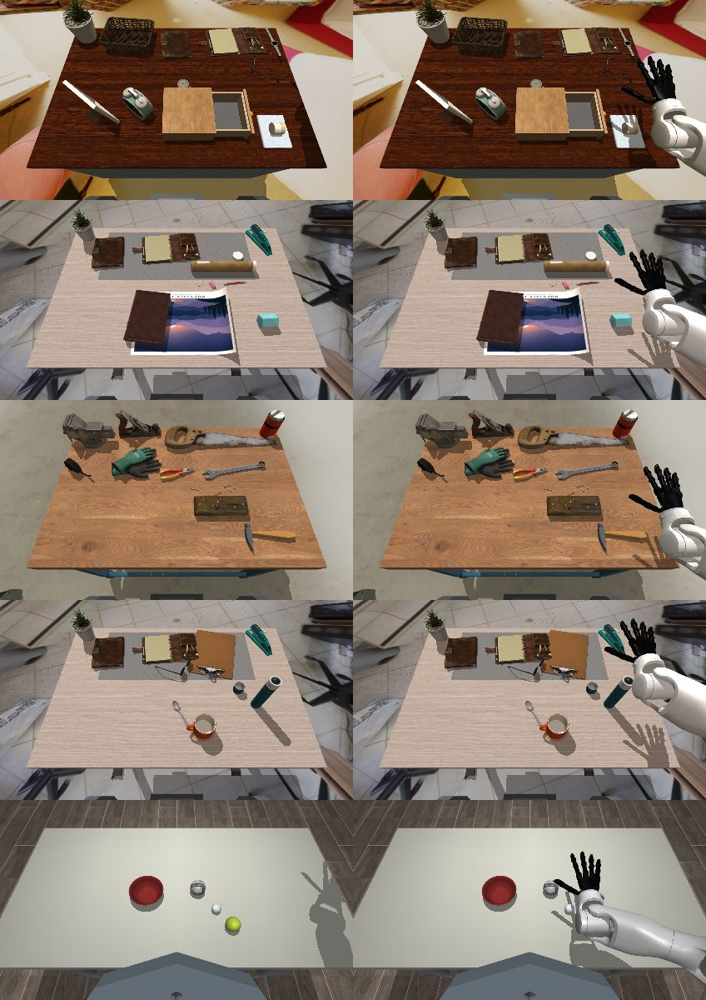

dashboard · state as of 2026-11-25 11:32 · page built 2026-11-25 11:32
You asked, on the night of 23 to 24 November, for the Embodied First Exam's dexterous tasks to be ported into our MuJoCo with our robot and the physics proven the same, and for a skill layer in which every skill plans its motion from the depth image, iterated without stopping. This page is the short version; the detail is on the port page and the skills page.
Nothing ran from about 18:20 to 19:57 either: the model API lost its credentials again and all five workers stopped (the skill fixes and the head-view video rebuild); they were restarted at 19:58 from their progress files. Earlier: nothing ran from about 10:45 to 12:10 (the connection to the model API was down; every worker stopped and was restarted at 12:17 from the files on disk). One memory incident at 07:18 (a 33 GB script of the other session, killed by the kernel); nothing of this work was lost in either.
移植（Embodied First Exam 灵巧手任务）：两个 MuJoCo 套件共 51 个任务（DexHandExam 30 个、DexToolBench 21 个），任务描述已全部记录。原始代码已在它自带的 Docker 镜像里逐个跑通并录像。51 个任务都和原始代码做了逐控制步的动力学对比：在同一个 MuJoCo 版本内，导出的场景与原始代码逐比特一致；但原始版本（3.4.0 / 3.3.7）和我们的 3.8.0 之间运动并不相同，基准自带的参考解在我们的引擎里 DexHandExam 41 个中只有 26 个仍然成功，DexToolBench 6 个完整的参考解一个也没有。渲染：DexHandExam 的 30 个任务做了逐像素对比（同类软件渲染器下平均差不超过 0.14/255），DexToolBench 只比了第一帧（平均差约 1/255）。
换机器人：我们的天机 + Wuji 2 机器人已放进全部 51 个场景，其中 47 个（DexHandExam 26 个、DexToolBench 21 个）建好了任务目录，并在联合仿真里跑过一次 3 秒的静置回合（机器人不发任何指令），用原始成功判据判定为“未完成”；这是预期结果，不是成绩。另外 4 个没有做到：3 个“物体一开始就握在手里”的任务，原始起始姿态搬不到我们的手上；paper_half_fold 在我们的引擎里无法仿真（纸会从桌沿穿下去），等你决定。
技能层（参照 ASPIRE 的封装方式）：新包 s2/dexharness/cap 已建成，共 14 个技能。每个技能都以当前深度图为输入，只执行运动规划器给出的轨迹：碰撞模型由深度图建立，轨迹的每一行都是天机臂 IK 解出并做过碰撞检查的关节构型；抬升是每 5 mm 求一次 IK 的竖直线，某一点无解时改走关节空间路径，再不行就拒绝。目前只有 4 个技能（移动到位姿、抬升、撤离、回原位）在真实联合仿真里跑过：共 12 次调用，空手、不带跟踪策略，机器人没有碰到任何东西，掌心平均跟踪误差约 1 mm，每次调用都有三联视频。同一批测试里还查出一个错误结果：移动途中握拳时，规划只检查了张开的手，拳头压到了球上，技能却报告成功；现已修复并经独立复测确认（球旁握拳的指令在动作前即被拒绝，球不再被碰动），复测另查出两处遗留问题，正在第二轮里修。其余 10 个技能还没有在联合仿真里跑过，也没有视频。
还没有做到的：新技能层还没有抓起过任何物体（不论带不带跟踪策略），也没有尝试过任何一个移植任务，所以没有任何任务被完成；这些正在第二轮里做（已于 13:19 启动）。另外，10:45 到 12:10 模型 API 断线，所有工作进程停了约一个半小时，12:17 重新启动。
需要你决定的事项紧接在下面（“Decisions”）。本页的数字已由四个独立检查进程逐条对照文件核对过，下面是改正后的版本。
s2/dexharness/s2h/OVERNIGHT_PROFILE.md §0 and the trial protocol s2/outputs/harness_round/trials/PROTOCOL.md. Where the overnight pieces stood when cut: the first clip-pack acceptance sweep got 9 of 16 arena units judged before the measure edits voided the rest (correct behaviour); the clip-selection defect on lying shapes is diagnosed with a prepared one-batch patch and unit tests (it was waiting for the edit window); the model-path fixer had just started. All three are resumed, and the plan-first trials on the 50 tasks start now.s2/dexharness/s2h/OVERNIGHT_PROFILE.md (the operating document every overnight run starts from) and BOUNDARY.md (the one-pager builders follow). Two additions from you tonight, now binding: (1) S2's callable surface is everything ASPIRE's live agent has — the full forked tool list under ASPIRE's names, plus SAM 3D and the segmentation plugins on the head camera's pictures; an unported ASPIRE live-agent tool is a gap to fork, never a tool to drop; only the head-camera rule and the no-verdict rule filter what a tool returns. (2) A skill's output downward is one S0 reference trajectory object: the object's mesh trajectory plus the wrist trajectory (and the hand-command track), which the tracking policy turns into finger motion — so the envelope is measured on exactly that object, and one probe answers for every skill that emits the same reference. Upward a skill reports only what it did. Standing defaults recorded with it: counted series call skills as JSON tools (the code fragment stays development-only); the envelope query sits between plan and execute and refuses only on a measured "cannot"; the counted loop is synchronous.hold re-issued the "firm" hand command, which re-floors the finger joints and loosened the thumb: lost about 11 s after the lift. Now the grasp ends with one settle and one "firm", and hold sends nothing: held to the end of the record in two long runs (19.6 s and 20.8 s through transport, a set-down without release and two holds). Residual creep 0.5 mm/s; nothing beyond 21 s measured; one object. Also: a 2 cm lift used to raise the object 32 mm (the clip's own rise was added on top): now 15 mm. Set-down onto the book is now felt (18.6 N on the book only), but letting go after it still tips the block (66 mm). Onto the poster curl the block reaches and presses it, reported "not felt" honestly (paper does not push back). Push with a clip bound now plans and executes (27 of 60 mm, not investigated). False "held: yes" on a falling ball: now "no", agrees with the record. Not fixed: the orange cannot be lifted by the scripted grasp (two attempts taken back). Tests: 2,628 passed, 2 failed (pinned the old segment count; updated).s2/outputs/harness_round/envelope/.push is refused or re-planned at plan time. (6) slide tries 14 fist poses; one of the two refused forms is still out of reach, the other is now refused with a reason (fist under the table top). (7) The count of withheld result keys is not fixed (it lives in files the fixer was told not to touch). (8) Guide, cards and capability table corrected. Whole test folder: 2,329 passed, 2 failed (both in one harness file of another builder). The fixer's edits voided most grasp units of the first atlas probe while they ran (the harness detected the code change, as it should); code frozen at 22:35, probes after that count.slide shut the drawer in one call; a 3 mm press flipped the power-strip switch; the policy grasp held in 5 of 5; letting go in the air moved the block 9.6 to 23.1 mm sideways (4 releases), and the skill's own "landed" answer and offset agreed with the record in 5 of 5. Does not hold: (1) the worst kind: on a ball the scripted grasp answered "held: yes" with no grip force while the ball was already falling (its check rests on depth alone); (2) "lower until the thing under it is felt" worked only on the desk, never on a named object (0 of 2: poster curl, book), and its "fingertips felt it" detail was true when nothing was touched; (3) letting go after a felt set-down moved the block 49.6 mm and tipped it, outside the 20 to 28 mm claimed; (4) the guide's own letting-go recipe was refused by the planner in 2 of 3 sessions; (5) the scripted grasp never lifted the orange (0 of 3) and its default call is refused against its own target; (6) push issued a 413-row plan that the simulator refused at execution; (7) slide on a free block was refused in both forms tried; (8) two sentences of the S2 guide are wrong and the count of withheld result keys is under-reported. None of these episodes is counted. These go to the next skill round as a fix list; the harness build does not depend on them. Report: s2/outputs/harness_round/finish_proof.json.s2/dexharness/cap/) under ASPIRE's own file names, by one mapping rule: its repository root is cap/. Forks: the agent attachment (MCP bridge with a closed tool list, session, program catalogue), batch, the command line (doctor, manifest, validate, run, run-batch), environments and configs, the validation engine with plans and provenance, the run-artifact document, the document-honesty tests, and the iterative-debugging campaign runbooks with their scripts and lint (four defects in ASPIRE's own dispatch script fixed in the fork). Ours on top: the dexterous skills, the tracking policy, the head-camera rule, and the atlas (measured capability rows written only by the host from declared, scripted, model-free probes: release displacement, hold time, press depth, what the head camera cannot see). Twenty listed departures from ASPIRE, each with its reason; the main ones: S2 is a model called by code whose only door is the tool list (ASPIRE starts a coding agent with a shell and forbids bypass by text); no success value where any agent can read it (ASPIRE prints task success); the verifier's isolation is enforced; start variations and ten no-practice tasks instead of seeds; an auditor on passes; numbers live in the atlas, not in hand-written text. A plan is an ASPIRE validation plan plus an experiment block (question, hypothesis, what counts for and against). Tonight's 28 library entries and the protocol's task numbers become seed for developers only; the library S2 sees starts empty. One departure is provisional: S2 still sends code fragments (ASPIRE's live agent cannot), kept as one extra tool inside a jail. Four builders started at 21:22, fork-first: ASPIRE's own tests must pass on the forks before anything is adapted. Specification: s2/dexharness/s2h/ARCHITECTURE.md (version 1 kept beside it).s2/outputs/harness_round/s2h/ASPIRE_PORT_runtime.md and ASPIRE_PORT_campaign.md). What reading ASPIRE closely showed: (1) ASPIRE has three modes, not one loop: whole programs with a proposal, a verifier and held-out seeds; a library grown block by block and frozen with a hash manifest; and a live session on its real robot, one tool call at a time, which has no practice loop. Your "S2 -> skill -> S2 -> skill" is the third mode's unit of action, so the port composes that with the campaign shape and the admission rules of the other two, under ASPIRE's own names. (2) Our live session is two ASPIRE things fused (its live agent session and its run life cycle); ASPIRE keeps them apart. (3) ASPIRE's live agent cannot send code: it has a closed list of tools and catalogued programs. Ours sends code fragments, which is a departure that needs a jail. (4) ASPIRE's isolation of the agent and of its verifier is a prompt (its own text: "the isolation rests on you following the rule"), and task success is readable by its agents; those are the places where we add enforced barriers. (5) What we lack entirely: the MCP attachment, the program catalogue, batch, the command line with doctor and validate, validation plans, the environment configs; roughly 5,500 lines of source and 3,000 of tests to fork. (6) The atlas: measured numbers go to the atlas, written only by the host from declared probes; procedure goes to the library; agents never write the atlas. An architect is rewriting the architecture on these maps; four builders then fork first and adapt second. The first architecture, kept for its guarantees, was:s2/dexharness/s2h/ARCHITECTURE.md). What it will guarantee: S2 is a model called by code with three tools (step, look, close) and no shell or files, and every byte it received is stored; no verdict exists while a session lives (the rule is run only after the session process has exited) and S2 never receives one; every episode belongs to an experiment declared and hashed before it ran, in a ledger that only grows and detects tampering; an episode cut off by an outage is void by rule, never judged; test starts cannot exist before the knowledge is frozen; a varied start is used only after an idle episode on it was judged like the authored start; knowledge reaches S2 only after a mechanical check and a blind verification by fresh S2 episodes on new starts that beats the same starts without it; verification and test series run inside a jail; a capability number shown for a task never comes from that task's own scene. What it will NOT guarantee, stated by the design itself: that the coordinator (me, with a shell) kept the rules; that the skill code and the prompt files carry no memory of the 50 scenes (they are written by agents who saw verdicts on them); that a pass on a task where only the robot's posture can be varied was not a remembered layout; that a varied start is as hard as the authored one; that a pass came about by the method the instruction means (14 rules can be satisfied by a wrong method; flagged and audited, not fixed); that the tracking policy is free of simulator state (it is fed the object's true pose). Defaults I took, yours to reverse: the harness calls the model API itself on this machine's account (the designer's rough, unmeasured estimate: low hundreds of dollars for a 50-episode test series); Fable 5.2 plays S2, Opus 5.5 is the comparison; starts vary by up to 0.08 rad per arm joint and 20 mm / 20 degrees of the object where an idle episode shows the rule undisturbed; 10 of the 50 tasks are set aside with no practice at all, as the only transfer figure; the headline will be the test series only, as a lower bound (passes upheld by audit) and an upper bound; development verdicts go to a coach after close, never to S2. The first two hours of building buy: declared capability probes through the real simulator with no model, a ledger, the verdict wall, and tests in which a hostile scripted S2 gets no path, secret or verdict; an independent breaker then tries all of it.
data/forge_releases/v9001/ (the loader accepts only names of the form v<number>; it is not a Forge release, although it now sits beside v21 and v25), with a manifest in data/forge_releases/hoi_pack_v1/ and one recipe per clip in data/recipes_local/hoi_pack_v1/. All three are ignored by git and the pack itself is untouched; delete the three folders to undo. By clip id, 65 of the 157 are in the V21 training recipe of the default policy; whether the files are byte-identical to what it was trained on is not known. The pack has no pick clip of a ball, a 60 mm cube, a brush, the claw hammer or the screwdrivers.~/workspace/HandsOn must stay until 67 cached scene files and the Isaac environment are re-pointed. pixi run planner still rebuilds a retired page and publishes it to the live site: do not run it. About 157 MB of site media belong to retired pages only and can be deleted when you say so.| You asked | Where it stands | What exists |
|---|---|---|
| "Finish what I asked first" (the clean-up, the count of exam tasks, the folder merge proposal) | done, with leftovers listed | The clean-up was carried out and checked; the count was delivered (62 tasks labelled dexterous: 30 + 21 + 11); the folder merge was written as a proposal and deliberately not carried out while two programmes run in the repository. Leftovers: last item of the second decision list. |
| Take every dexterous task of the Embodied First Exam and record every task description | done for 51 of the 62 | All 51 descriptions of the two MuJoCo suites (30 DexHandExam, 21 DexToolBench) are recorded from the clone at commit e6db5737 (s2/benchmark/InHouse/efe_*/TASKS.md, descriptions.json) and shown in full on each card. The other 11 are the third suite (decision 1). |
| Replicate each scene exactly in our MuJoCo: assets, materials, lights, rendering, physics; no changes of our own | done for 50 of 51, with declared edits and three known departures | Each scene is the model the original code builds, exported with its assets and compiled under our MuJoCo 3.8.0; the declared edits are in decision 8. Known departures: in vacuum_bin_reseat one unused scene texture was deleted together with the robot (to be restored); in the 21 DexToolBench scenes the overhead light stands about 9 cm from its original place because the original scene text makes it follow the centre of mass of the whole model, and our robot is not the original robot (the scene text is unchanged); paper_half_fold does not run in our engine (decision 2). Rendering was compared pixel by pixel for the 30 DexHandExam tasks: 242 reset pictures of the exported scene (original robot still in it) differ from the original's by at most 0.14 of 255 brightness levels on average with the same kind of software renderer, and by up to 5.4 with the GPU renderer our videos use. For DexToolBench only the first video frame was compared, with unlike renderers: about 1 of 255 on average. |
| Clone the original code and compare action-conditioned dynamics to confirm the physics is the same | compared for all 51; identical inside one MuJoCo version, NOT identical between the original's version and ours | The original code runs here in its own pinned Docker images (MuJoCo 3.4.0 and 3.3.7); all 41 DexHandExam reference solutions succeed there and the 21 DexToolBench ones reproduce their documented result (only 6 of those reach all their goals even in the original). Inside one MuJoCo version, the exported scene driven by our own stepping loop reproduces the original code bit for bit after every command step, in every run compared (about a million command steps summed over the runs, which share their beginnings; for sweep_dustpan by a digest of the state after every step). An independent re-check of the seven tasks that start with the object in the hand reproduced this with its own loops. Between the original's version and ours the same actions do not give the same motion. Four causes are known: free-body integration (changed in 3.7.0; switched back by a documented flag), multi-contact collision on by default since 3.8.0 (switched back by a flag), a servo force-limit fix in 3.5.0 that concerns only the original robot, and the cloth contact change of 3.5.0 (paper_half_fold). One difference is unexplained: with the switches on, a single command step still differs by up to about 5 mm while the robot touches an object. The benchmark's recorded solutions are a weak yardstick in any case: inside the ORIGINAL engine, moving one start coordinate by 1e-12 changes the outcome in 17 of 21 DexToolBench tasks. |
| Replace the original robot by ours (Tianji arms + Wuji 2 hands) | 47 of 51 tasks have our robot in the scene, a task folder, and a 3-second idle episode judged by the original rule | The original robot is removed by deleting text only and ours is attached where a declared rule puts its base. A scene file with our robot exists for all 51, but only 48 went through the four placement checks (the scene's compiled values are unchanged; the scene moves the same with our robot standing still in it; our robot collides with the same scene parts as the original robot; nothing touches at the start): in the three tasks of decision 4 our hand starts 6 to 17 mm inside the scene and the checks were not run. 47 pass all four, counting stool_brace_insert under the exception of decision 7. An idle episode means: our robot stands in the scene for 3 seconds and is commanded nothing, and the task's ORIGINAL success rule, running inside the co-simulation, must answer "not done"; it does in all 47. Four of the seven tasks that start with the object in the hand start with it in OUR hand (at the original's object pose and finger targets) and it stays held, drifting under 0.4 mm in 3 s. Open: "our robot in the scene" does not mean our robot can reach all the work (for example our arm reaches 219 of 463 hand poses of the original solution in drying_rack_unfold); an independent check of the first 21 folders found defects in how the rule is declared and scored (stage lists differ from the original in six folders, two failure names are missing in one, the scorer accepts 12 of 77 deliberately broken records) which change no verdict so far and are to be fixed before any attempt is scored; the 21 DexToolBench folders have not been independently re-checked yet. |
| Publish it on a sub page of the site, with video | published and kept current; it has no video of our robot acting, because no task has been attempted | efe.html has one card per task with the full original description, the original environment's own video, a picture of our robot in the scene and the sentences of every check. 44 cards also have the side-by-side original-versus-port video and the dynamics plot (the 7 tasks that start with the object in the hand have neither yet), the 30 DexHandExam cards have the pixel comparison, and 47 cards have the 3-second video of our robot standing in the scene. In 7 of those the original camera does not see our hands at all (ram_module_install, usb_plug_insert, binder_page_load, grinder_crank, jar_lid_open, envelope_letter_insert, bicycle_pump_stroke); they need a second camera. |
| Encapsulate the skills the way ASPIRE does | built | New package s2/dexharness/cap, organised like ASPIRE's harness: a registry of typed tools, a sandbox for the agent's program, one template that every skill goes through, and recorded run artifacts. Seven files are forks of ASPIRE modules; each says so in its own header and all seven are listed in THIRD_PARTY.md. |
| Every skill takes the current depth image and calls the motion planner; collision-free from depth; a trajectory the Tianji arm's inverse kinematics can solve; a lift may not be a bare straight line | built; the call structure is proven by tests for all 14 skills; shown in the co-simulation for 4 of them | Every skill goes through one template that checks the observation is current, builds the collision world from that observation's depth images, makes exactly ONE plan request and executes exactly that plan. A test per skill proves this call structure on scripted stand-ins; it does not by itself prove freedom from collision. That evidence is separate: 43 plans of the real planner on four scenes executed on a CPU copy of the rig with no contact, and the first co-simulation runs. A lift is planned as a straight palm line solved by inverse kinematics every 5 mm and collision-checked; when the line has no solution the planner plans a collision-checked joint-space path to the same height instead and the result says so, and only when that also fails is the lift refused (the fallback has not occurred in a co-simulation run so far). What the planner checks: the arm, the hand, a held object and the other arm against boxes built from the depth images. What it does not: space no camera saw (treated as free; 6 to 15 % of the workspace in the first scenes), the fingers inside the declared contact zone of a grasp, the fingers while the tracking policy drives them, a finger against its own palm or wrist flange, and anything that moves after the observation. The depth is the simulator's own noise-free render. |
| Keep iterating the skills without stopping, to get as far as possible | one build and one round of fixes, now independently re-run; round 2 is running; no grasp and no task attempt yet | First runs in the co-simulation (skills_cosim.html): the planned sequence of move to a pose, lift, retreat and go home, with an empty hand, on two scenes, gave 12 executed calls with no robot contact, palm error 0.89 to 1.21 mm on average (largest 4.36 mm) and 0.24 to 0.69 s of planning per call. A third session of probes is not in these figures: in it one executed call closed a fist onto a ball and still reported ok. Those runs exposed eight defects. An independent re-run of the same sessions and two more through the co-simulation (29 executed plans) finds six fixed, one fixed with a loophole and one partly (both in decision 12): a fist commanded beside the ball is now refused before anything moves and the ball does not move (before: 120 contact rows, 9.8 N, the ball pushed 15.9 mm); planning time is charged exactly; the 12 clean calls are still clean, palm error 0.88 to 1.21 mm. The package has 1,355 passing tests. The other ten skills (grasp, place, press, push, strike and others) have only run in unit tests or on the CPU copy of the rig; there, the guarded press did not stop on contact and the grasp-and-lift without the policy ended as a slip. |
| Show all of it with video on the website | video for the 4 skills that have run (of 14); none of the fixed behaviour | Three-panel clips (the depth image the skill was given, the plan, the execution) exist for all 22 recorded calls of the first five co-simulation sessions, refused and faulty ones included, on skills_v2.html, which is generated from the run folders and was checked figure by figure against them. The clips were rebuilt with the corrected video tool (it now shows the fist inside the ball and counts finger contacts), but the runs themselves are from before the fixes. There is no video yet of the fixed behaviour or of the other ten skills. |
Tasks not counted as "our robot in the scene", each with its reason on its card:
s2/benchmark/InHouse/efe.md. First result of the paused round worth knowing: the benchmark's own jar-lid solution, replayed by our robot INSIDE our co-simulation, succeeds in 0 of 14 runs with the co-simulation as it is and in 9 of 14 once the right hand's finger gains are the rig file's own instead of the policy's (not yet verified independently).| Time | What happened |
|---|---|
| 21:22 | Architecture version 2: ASPIRE's harness forked into our package under its own names; ours on top is the skills and the atlas; 20 listed departures. Four builders started, fork-first. |
| 21:14 | Skill fixes done: release in place (2 to 3 cm instead of 7 to 21 cm), set-down until felt, slide repaired, honest release checks; whole test folder green. Independent proof running. |
| 20:55 | Owner: the harness must be ASPIRE's, with our skills and atlas on top. First build stopped; ASPIRE mapped file by file (21:05); architecture being rewritten on it. |
| 20:52 | S2 harness architecture decided (s2/dexharness/s2h/ARCHITECTURE.md); four builders started on its first stages. |
| 20:30 | Six defects that an independent check found in those videos are fixed; all 21 rebuilt. Work on S2 as a rigorous harness started at 20:25 (architecture contest, protocol, library, practice loop). |
| 20:07 | All 21 episode videos on the results page redone from the head camera's view. |
| 18:20 | The model API lost its credentials; all five workers stopped. Restarted at 19:58 from their progress files. |
| 17:55 | Paperweight task with the tracking policy under the head camera: the grasp holds in 4 of 4 episodes, the release pushes the object away in 4 of 4; 0 passes. Skill fixes started (release in place first). |
| 17:37 | Second task passes under the head-camera rule: t19 jar into the drawer, PASS, PASS in development. |
| 17:35 | First result under the head-camera rule: t41 passes with the head camera alone (FAIL, PASS, PASS in development), the same as with four scene cameras. |
| 16:15 | New rule from the owner: S2 and the skills see only through a robot-mounted head camera looking down. The change and a re-run of the passed tasks under it started at 16:25. |
| 16:04 | Second in-house task passed in development by an LLM agent in the live loop: t19, jar into the drawer and the drawer closed (grasp, carry, drop, push shut). |
| 15:51 | First PASS of an in-house task by an LLM agent in the live loop (t41 power strip, development episode). 15:55: the declared control grasp with the tracking policy passes in its second episode. |
| 15:41 | Live S2 loop and simulator slots done; all 50 tasks judgeable from a live session; first policy grasp through the new layer (lifted 54 mm, dropped after 1.1 s). SAM 3 / SAM 3D do not run (no access; clone denied); SAM 2.1 + CLIP run instead. |
| 15:37 | Four new skills are in the layer; push and guarded press ran in the co-simulation for the first time. |
| 15:07 | Annotated episode video, results page generator and the readiness study of the 50 tasks are back. |
| 14:35 | New instruction: SAM 3D for S2, depth-conditioned capability-aware motion, the S2-skill loop, and the 50 in-house tasks. Foundations started. |
| 13:42 | Port round 2 paused on the owner's instruction; state and next steps written to s2/benchmark/InHouse/efe.md. |
| 13:19 | The skill fixes were re-run independently through the co-simulation (six of eight defects fixed, two partly); skill round 2 started. |
| 12:58 | Port round 2 started. The video tool is corrected and a skills page generated from the run folders is published. |
| 12:32 | Four independent checkers compared every claim of this page with the files (about 200 claims; 59 sentences found wrong, too strong or out of date); this is the corrected page. |
| 12:30 | HOI pack import finished; the first control grasp with the tracking policy is declared (not run). |
| 12:17 | Workers restarted from the files on disk. Port page republished: 47 of 51 tasks with our robot in the scene. |
| 10:45 | The connection to the model API dropped; all running workers stopped. It came back about 12:10. |
| 10:44 | DexToolBench: all 21 task folders written, each with an idle co-simulation episode judged by the original goal rule. |
| 10:40 | Skill fixes written (their authors' test run: 1,321 passed); independent re-run started. This page first published at 10:42. |
| 10:25 | Dynamics compared with the original for all 51 tasks. |
| 10:15 | Independent re-check: the benchmark's own solution of jar_lid_open, replayed by our robot, reaches the original rule's success when the arm is driven stiffly enough. |
| 09:05 | Our robot placed in all 21 DexToolBench scenes; the cause of paper_half_fold found (a MuJoCo 3.5.0 contact change). |
| 08:21 | Study of what each of the 51 tasks needs from the skill layer. |
| 08:05 | Skill layer: first runs in the real co-simulation; eight defects found by those runs; skills page published. |
| 07:45 | Starts with the object in the hand: four reproduce with our hand and hold, three are stopped (nothing authored). |
| 07:34 | First ported task folder (jar_lid_open) and first co-simulation episode with our robot in a ported scene, judged by the original rule: idle = not done at stage 0, a scripted push of the jar is caught as "jar_slid". |
| 07:18 | Machine ran out of memory (a 33 GB script of the other session; the kernel killed it; none of my jobs died). |
| 06:30 | The co-simulation gets an opt-in scene hook (the original success rule runs inside it at every physics step) and a skill server (the agent side never holds the scene model). |
| 05:10 | The original simulation of all 30 DexHandExam families recorded in its own image: 41 builds (30 with the original hand, 11 with the Wuji hand), all 41 reference solutions succeed, deterministic. |
| 04:15 | Arm servo of the co-simulation repaired behind a switch. |
| 03:10 | Port design fixed: what "the same" means (bit-exact inside each engine, measured between engines), the checks, the order of work. |
| 02:05 | All 51 task descriptions recorded; first version of the port page published. |
| 01:15 | The benchmark is cloned (commit e6db5737) and read: 30 DexHandExam task families, 21 DexToolBench tasks. |
s2/benchmark/InHouse/efe_dexhand/<family>/ and
efe_dextoolbench/<task>/ (the original instruction, the scene, the original rule, start files); tools:
s2/benchmark/InHouse/tools/efe/; how the ports differ from the folder's conventions: the last section of
s2/benchmark/InHouse/AGENTS.md.s2/dexharness/cap/ (start with
SEAMS.md); simulator side handson_bridge/skill_server.py.s2/outputs/skills_dev/efe_readiness/PLAN.md. The first control grasp, declared:
s2/outputs/skills_dev/obj_pack/CONTROL_GRASP.md. The check of this page: s2/outputs/skills_dev/status_check/results.json.